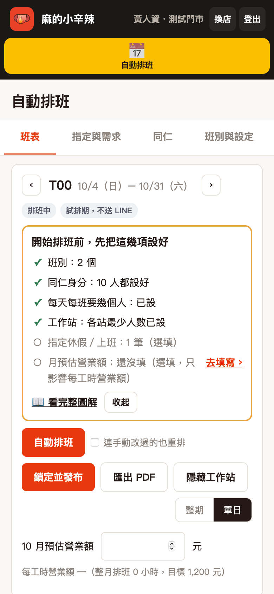
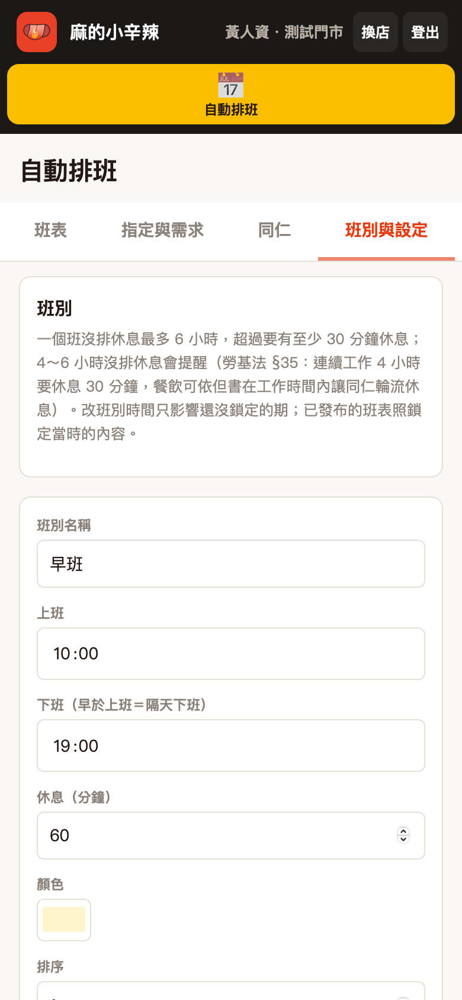
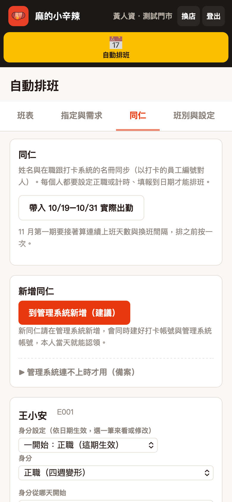
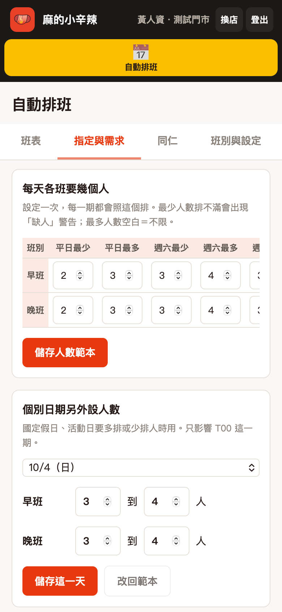
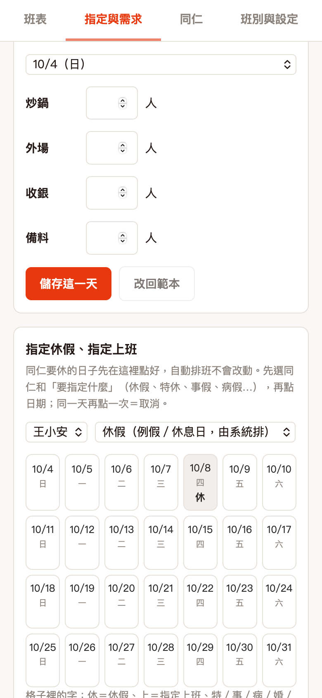
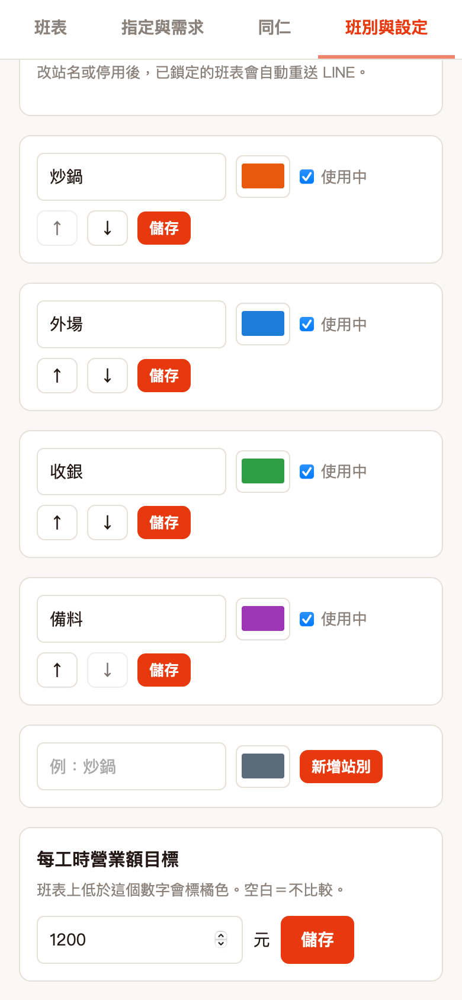
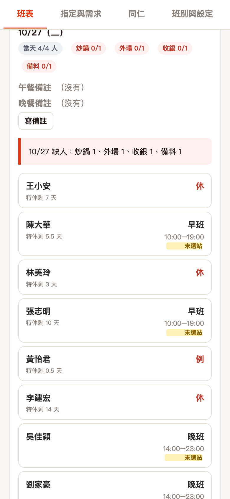
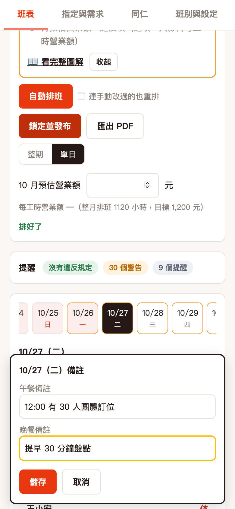
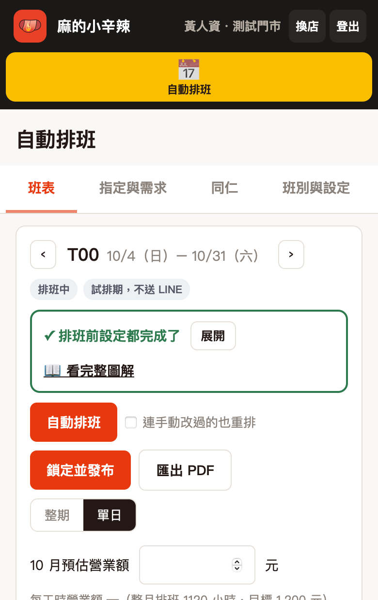

管理系統 › 人資部門 › 排班管理（門市排班）
打開「班表」，最上面會列出排班前要設好的項目，系統自己打勾。紅字是一定要設的，沒設好「自動排班」按不下去；黃字建議設；灰字是選填。點「去設定 ›」直接跳到那一頁；營業額那一項是「去填寫 ›」，會移到同一頁上方的營業額欄。

到「班別與設定」，把店裡會用到的班都建起來：名稱、上班、下班、休息幾分鐘。例：早班 10:00–19:00、休息 60 分。

到「同仁」，每個人都要選正職或計時，沒選的人自動排班會排不出來。「每期目標工時」正職沒填就是 160 小時；計時同仁填的是這一期最多排幾小時。

到「指定與需求」，平日、週六、週日各填一組「每班最少幾人、最多幾人」。自動排班會照這個人數排。
遇到活動、國定假日這種特別的日子，選那一天另外調人數，只影響那一天。

同仁事先講好要休的日子，在「指定休假、指定上班」選那個人，點日期切換：沒指定 → 休 → 上 → 某個班。自動排班不會動這些格子。

店裡要分炒鍋、外場、收銀這類站別的，先在「班別與設定」建工作站，再到「指定與需求」填每站最少幾人。沒用站別的店跳過這一步。

回到「班表」按 自動排班。排好後看「提醒」：紅色「要修正」一定要改，才能鎖定；黃色是警告，看過自己判斷。

某天要提醒全店的事寫在備註，例：「12:00 有 30 人團體訂位」「晚餐提早盤點」，每格最多 60 字。手機按 寫備註，電腦點日期下方的備註格。
同仁在 LINE 出勤班表點那一天就看得到。已鎖定的班表也能直接改，存了會自動重送到 LINE。

沒有紅色「要修正」之後，按 鎖定並發布。同仁在 LINE「鼎兆元打卡」的出勤班表就看得到這一期的班。
